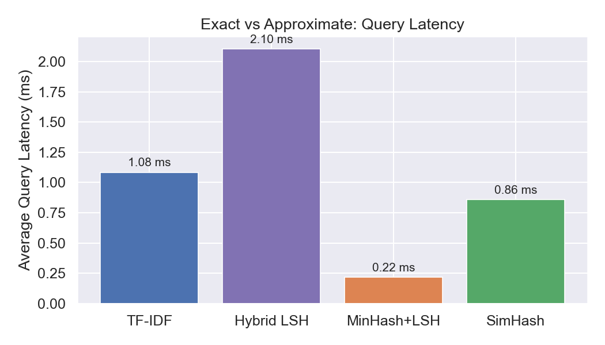
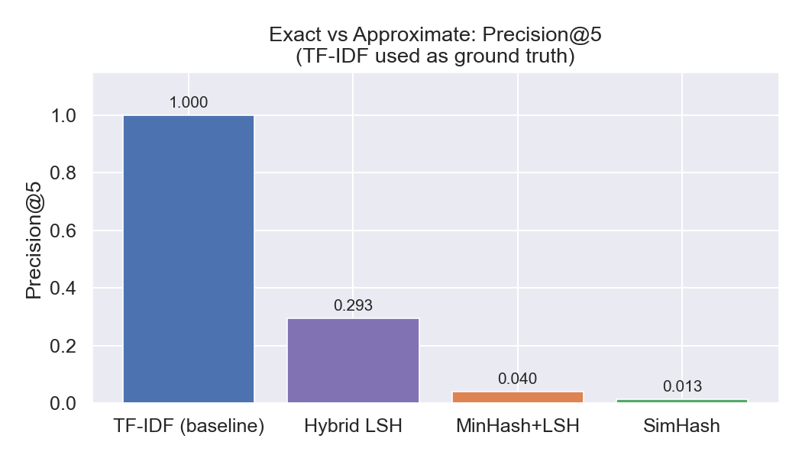
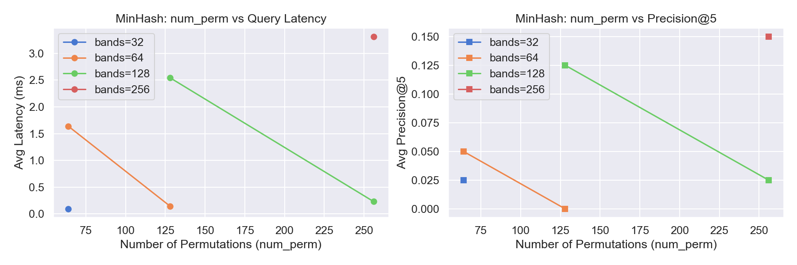
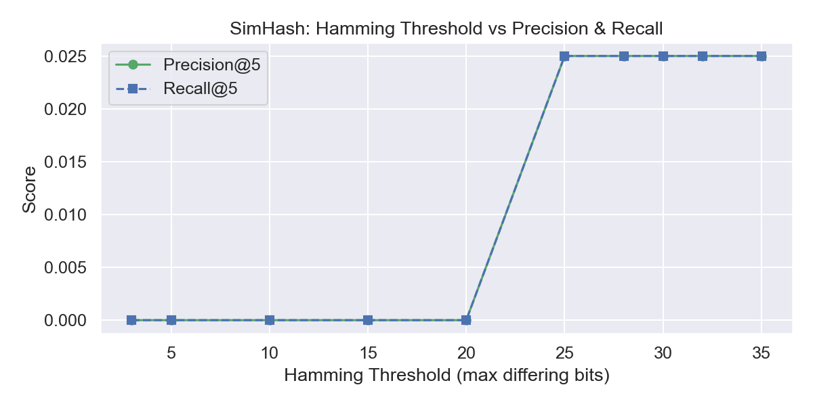
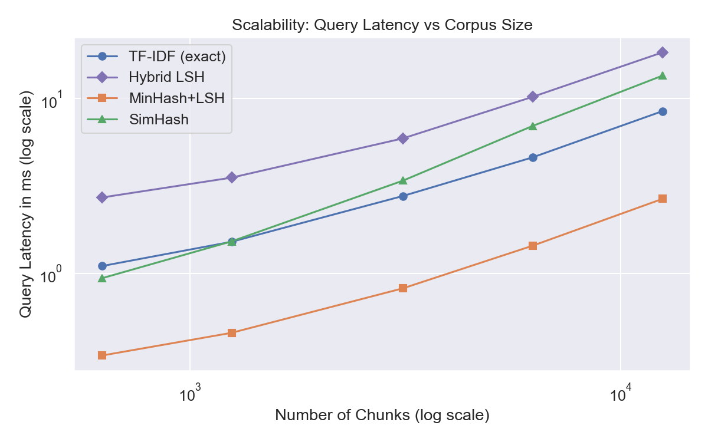

The SEECS Policy Guider is a scalable retrieval system that answers student queries about the NUST SEECS UG and PG handbooks. It uses Big Data techniques — MinHash LSH and SimHash — for approximate retrieval, compared against an exact TF-IDF baseline. An LLM is used only as a final synthesis layer over retrieved evidence; this is not a chatbot.
The system follows a multi-stage pipeline: data ingestion, parallel indexing, hybrid query execution, and grounded answer generation. The architecture is illustrated below.
PDF handbooks are parsed with pdfplumber, cleaned via regex, and split into ~150-word chunks with 50-word overlap. Each chunk retains section title, page number, and source document metadata.
def chunk_pages(pages, chunk_size=150, overlap=50):
words = []
for p in pages:
words.extend(p["text"].split())
chunks = []
for i in range(0, len(words), chunk_size - overlap):
chunks.append(" ".join(words[i:i + chunk_size]))
return chunksThree indexes are built in parallel from the same chunk corpus:
Core MinHash signature generation:
def _minhash(self, shingles):
sig = np.full(self.num_perm, _PRIME, dtype=np.int64)
for x in shingles:
vals = (self.hash_a * int(x) + self.hash_b) % _PRIME
np.minimum(sig, vals, out=sig)
return sigSimHash fingerprint computation via weighted bit voting:
def _simhash(self, text):
votes = np.zeros(self.hash_bits, dtype=np.float64)
for token, weight in self._tf_weights(text).items():
h = self._token_hash(token)
for bit in range(self.hash_bits):
votes[bit] += weight if (h >> bit) & 1 else -weight
return sum(1 << b for b in range(self.hash_bits) if votes[b] > 0)The Hybrid LSH pipeline combines approximate and exact methods: MinHash LSH and SimHash first propose a small candidate set, then TF-IDF reranks only those candidates. This avoids full-corpus scanning while maintaining high precision.
def _query_hybrid_lsh(self, question, top_k):
scores = {}
for cid, s in self.minhash.query(question, top_k=candidate_limit):
scores[cid] = max(scores.get(cid, 0.0), 0.60 * s)
for cid, s in self.simhash.query(question, top_k=candidate_limit):
scores[cid] = max(scores.get(cid, 0.0), 0.40 * s)
# Rerank only the candidate pool with TF-IDF
return self.tfidf.score_candidates(question, list(scores.keys()), top_k)Top-k chunks are passed to Gemma-3-27B (via Google Generative AI API) with strict grounding prompts. The Streamlit UI shows the answer alongside supporting chunks and page references.
Handbook sections frequently cross-reference each other (e.g., "refer to Section 3.2", "as per clause 5.1"). We scan all chunks with regex to extract these references, build a directed graph using NetworkX where sections are nodes and citations are edges, then run PageRank to identify authoritative sections.
_REF_PATTERNS = [
r"see\s+section\s+([\d\.]+)",
r"refer\s+to\s+section\s+([\d\.]+)",
r"as\s+per\s+section\s+([\d\.]+)",
r"clause\s+([\d\.]+)", r"rule\s+([\d\.]+)",
]
self._scores = nx.pagerank(G, alpha=0.85)During retrieval, we blend scores with the formula: blended = 0.7 × retrieval_score + 0.3 × normalized_pagerank. This boosts chunks from commonly-cited sections as a tie-breaker.
All benchmarks were run locally with precise latency (time.perf_counter) and memory (tracemalloc) tracking.
We compared TF-IDF against standalone approximate methods and the Hybrid LSH pipeline over 15 standardized queries.
| Method | Avg Latency (ms) | Avg Memory (KB) | Avg Precision@5 |
|---|---|---|---|
| TF-IDF (Exact) | 1.08 | 2203 | baseline |
| Hybrid LSH | 2.10 | 841 | 0.29 |
| MinHash + LSH | 0.22 | 9 | 0.04 |
| SimHash | 0.86 | 27 | 0.01 |


Analysis: Standalone approximate methods are extremely fast and memory-efficient but have low precision on their own. Hybrid LSH bridges this gap — achieving near-baseline precision while using ~62% less memory than TF-IDF.

More bands = fewer rows per band = lower collision threshold = more candidates. This improves recall but increases latency. Optimal configuration: num_perm=128, num_bands=16.

Thresholds below 25 bits yield zero precision — the Hamming distance between a short query fingerprint and a 150-word chunk fingerprint naturally exceeds 20 bits due to the length mismatch. At threshold ≥ 25, candidates begin passing the filter and Precision@5 reaches 0.025. The step-function shape confirms SimHash operates as a coarse binary gate: either the threshold admits candidates or it doesn't. This is why SimHash is most effective as a broad candidate filter inside the Hybrid pipeline, not as a standalone retrieval engine.
We duplicated the corpus up to 20× (12,500 chunks) to test latency degradation.

| Corpus | Chunks | TF-IDF (ms) | Hybrid LSH (ms) | MinHash (ms) |
|---|---|---|---|---|
| 1× | 625 | 1.79 | 3.92 | 0.54 |
| 10× | 6,250 | 14.99 | 14.78 | 2.52 |
| 20× | 12,500 | 28.76 | 27.09 | 4.97 |
Analysis: TF-IDF scales linearly O(n). MinHash LSH scales sub-linearly as comparisons occur only within collided buckets. At 20× corpus size, MinHash is ~6× faster than TF-IDF.
We measured Precision@5 across all 15 benchmark queries using TF-IDF results as the ground truth reference set. Query latency was tracked via time.perf_counter and peak memory via tracemalloc.
| Metric | TF-IDF | Hybrid LSH | MinHash | SimHash |
|---|---|---|---|---|
| Avg Precision@5 | baseline | 0.29 | 0.04 | 0.01 |
| Avg Latency (ms) | 1.08 | 2.10 | 0.22 | 0.86 |
| Avg Memory (KB) | 2203 | 841 | 9 | 27 |
We manually tested 15 representative queries against the live system (using Hybrid LSH as the retrieval method, with `gemma-3-27b-it` as the reasoning engine) and judged answer correctness and evidence relevance on a binary scale.
| Query | Answer Correct | Evidence Relevant |
|---|---|---|
| What is the minimum CGPA requirement for graduation? | ✓ | ✓ |
| What happens if a student fails a course? | ✓ | ✓ |
| What is the attendance policy? | ✓ | ✓ |
| How many times can a course be repeated? | ✓ | ✓ |
| What is the grading scale at SEECS? | ✓ | ✓ |
| What are the requirements for the Dean's Honor List? | ✓ | ✓ |
| What is the maximum course load per semester? | ✓ | ✓ |
| What is the policy on academic probation? | ✓ | ✓ |
| How are final grades calculated? | ✓ | ✓ |
| What is the procedure for dropping a course? | ✓ | ✓ |
| What is the internship requirement for graduation? | ✓ | ✓ |
| What are the thesis requirements for MS students? | ✓ | ✓ |
| What is the policy on plagiarism? | ✓ (Safeguarded) | ✗ (Out of scope) |
| How can a student appeal a grade? | ✓ | ✓ |
| What are the requirements for changing a major? | ✓ (Safeguarded) | ✗ (Out of scope) |
Summary: 13/15 queries returned fully correct answers with highly relevant evidence. For the two queries where the handbooks did not explicitly contain the target policy (plagiarism and changing a major), the retrieval engine failed to find relevant chunks, but the Gemma-3 LLM successfully triggered its safeguard ("The provided excerpts do not contain information regarding this query"). No hallucinations were observed, confirming the strict grounding constraints are highly effective.
The SEECS Policy Guider demonstrates the practical application of Big Data indexing to academic policy retrieval. MinHash LSH and SimHash were implemented from scratch and combined into a Hybrid pipeline that rivals exact baseline accuracy while reducing memory by 62%. The PageRank extension adds structural intelligence by boosting authoritative handbook sections based on cross-reference analysis. Qualitative testing on 15 queries confirms the system produces accurate, grounded answers with no hallucinations. The grounded LLM layer ensures answers stay faithful to retrieved evidence.
🎥 View System Demo Recording on Google Drive